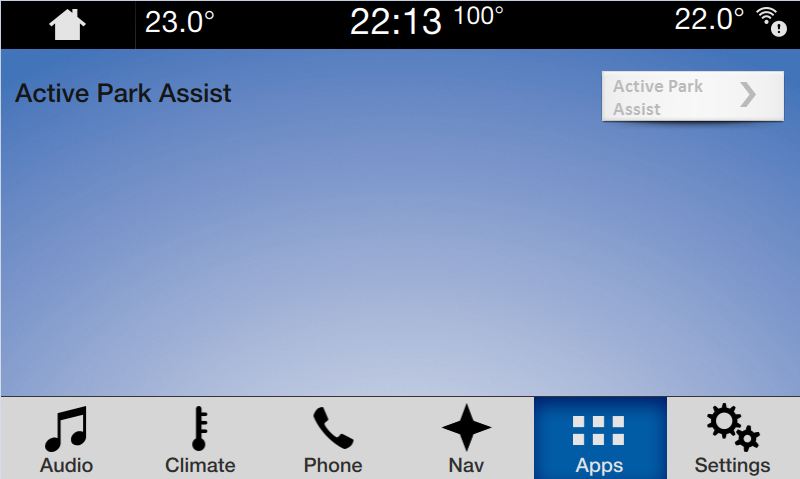

Toggle navigation
Active Park Assist
Team
About
Members
Prototype v2
TODO: explain how to use prototype
Set Vehicle to Valid Speed
Activate
To start, the vehicle must be moving 5MPH or less, otherwise the system is unavailable and the button is greyed out.

Parallel
Perpendicular
Apply Brake